РАЗГРУЗКА 4
По случаю праздников – ящик разрозненых ссылок и прошлогодних новостей.
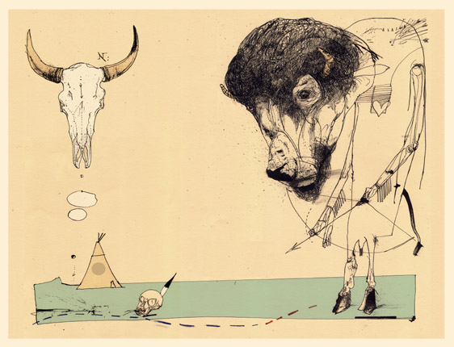
к вопросу о домиках и деталях:
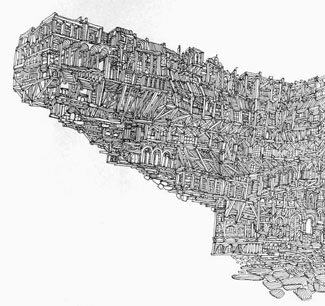
Или вот: Melanie Armstrong
Или вот:
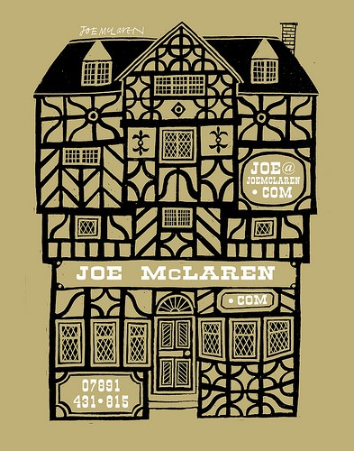
Dean Beattie довольно неприятный, но человеческие характеры и детали такая редкость по нашим временам.
Товарный фломастер, надо же. Тупая аккуратность может творить чудеса иногда. Но все равно лучше с тридцатого раза, но попасть белке в глаз, чем валить дерево, отколупывая по щепке, надеясь что белка за это время не убежит.
Иллюстратор месяца: Barnaby Ward, сушеный Эшли Вуд.
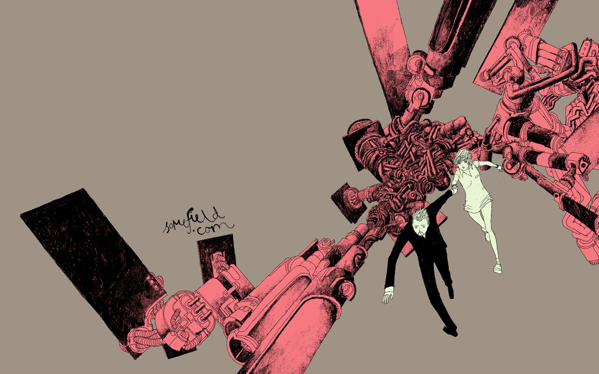
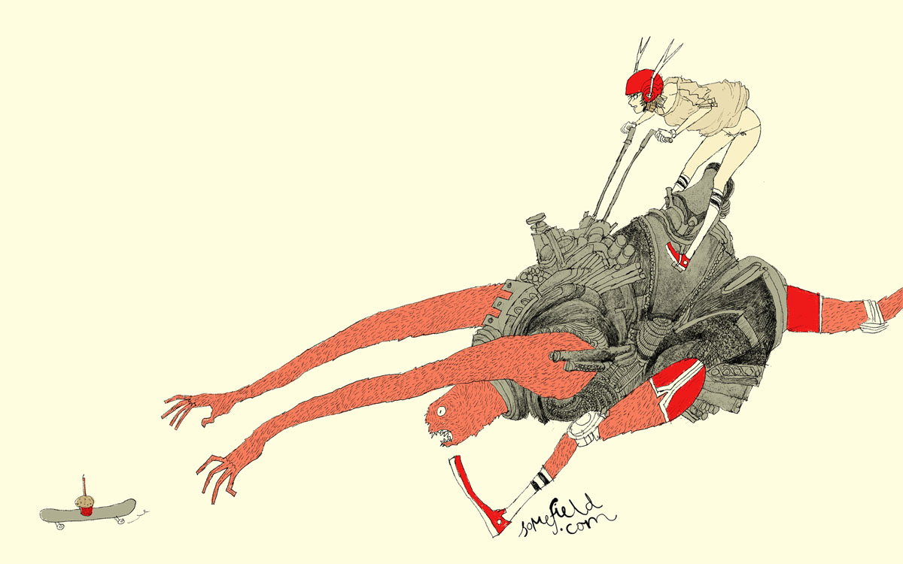
Сам Эшли Вуд, вдруг кто не знает (не перестаю, к слову, удивляться, насколько люди, интересующиеся иллюстрацией, на самом деле ей не интересуются).
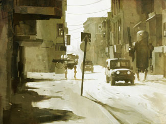
К вопросу о девушках и роботах: Sci-fi-o-rama, шикарный блог про СайФай.
Это Френк Миллер, тот самый
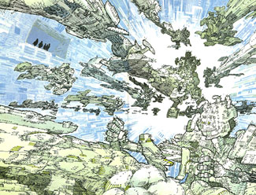
Voutch, аккуратное-французское-журнальное, всегда пригодится. Такой как бы Кираз без девиц.
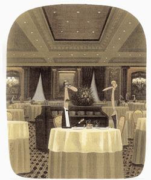
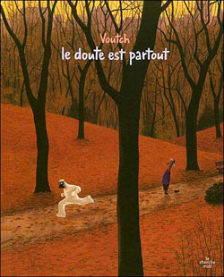
Сам Эдмон Кираз, на всякий случай.
Эдмон Кираз
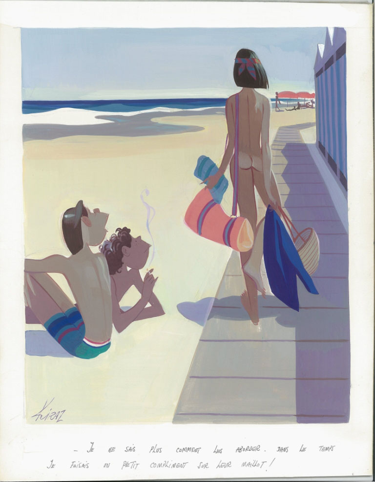
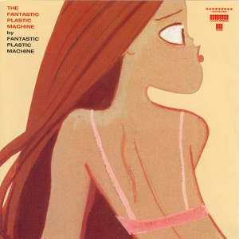
Все собираюсь написать про вот этих специалистов про девицам, но получится опять тот же самый разговор: унылая судьба, рассказчик, который умеет рассказывать только сказку про колобка (ну, про Аленушку). Хотя может, у них там звездам иллюстрации зарплату выдают девушками месяца, не знаю.
Эрих сокол (и вот тут) в этом смысле побогаче будет. Ну, и в некоторых других.
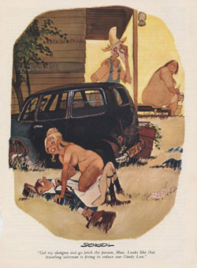
Еще вот тут, но уже без девиц.
Новости: Джо Морс обновил портфолио - отличный пример того, как художник в разных стилях и технологиях остается собой.
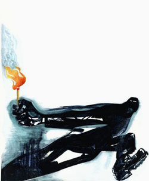
Бейзман лично уговорил Катыхина перейти на живопись, и это одуреть как круто.
Эдик Катыхин, портрет Сергея Снурника
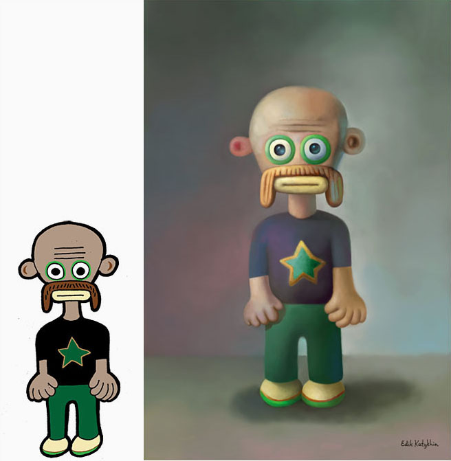
Давно так не радовался пейнтеру.
И в разделе некрологов: Николас Гуревич, видно, все-таки завязал с Perry Bible Fellowship, причем напоследок хлопнул дверью довольно недвусмысленно: 'Not today'.
Николас Гуревич
Надеюсь, теперь длинную историю сделает. Если кто-то по какой-то причине (даже не могу представить) не был, имейте в виду - не залипнуть часа на полтора невозможно.
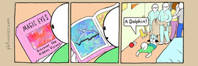
Молодой совсем человек, рисовальщик вроде бы не бог весь какой: лучшая его и самая пронзительная вещь (хотя там есть еще приключения человека без пениса) в этом смысле вообще черт знает что:
однако же иногда вдруг может выдать стопроцентно точный оммаж, как вот этот - Эдварду Гори.
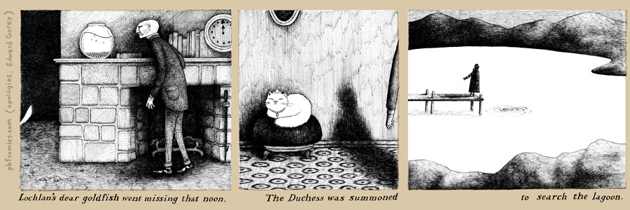
Да, сам Гори, опять на всякий случай, прекрасный и ужасный. На родных сайтах картинок мало, проще всего искать Гуглимеджсёчем. или вот вообще торрентом, кто продвинутый.
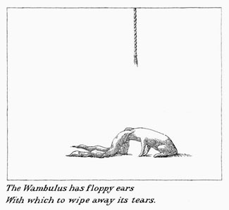
Тоже про него стоило бы отдельно, но что про него писать? Гений он и есть гений. Эдвард Лир встречает Эдгара По и оказывается, что они братья-близнецы. Фамилия (настоящая), заметьте, означает «кровавый». По богатству черно-белого буквально сравнить не с кем. Рекомендую поснимать; вот Гэн Уилсон мой любимый много взял у него.
Гэн Уилсон
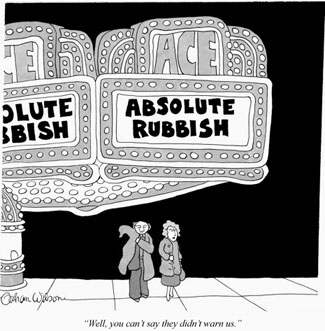
Или вот Женевьев Кастрё - была уже здесь, правда.
Женевьев Кастрё
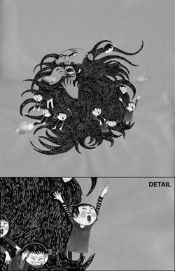
Ну и напоследок, раз к слову пришлось: на beguiling.com надо перелазать примерно все.